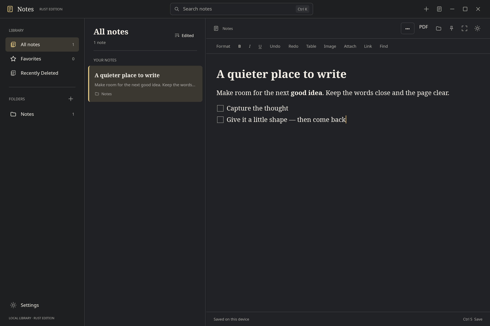
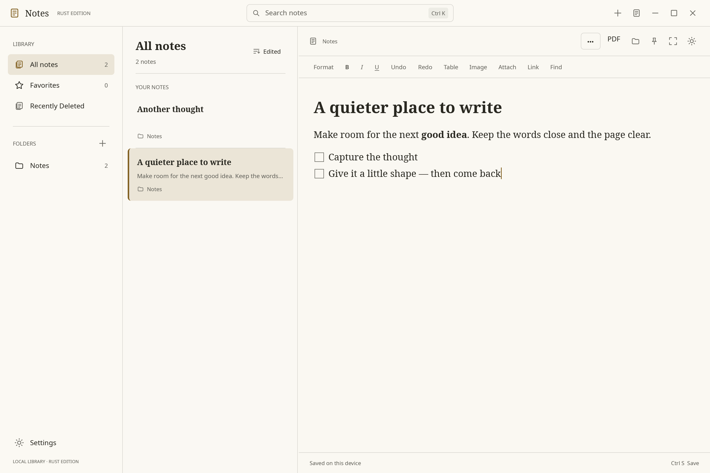
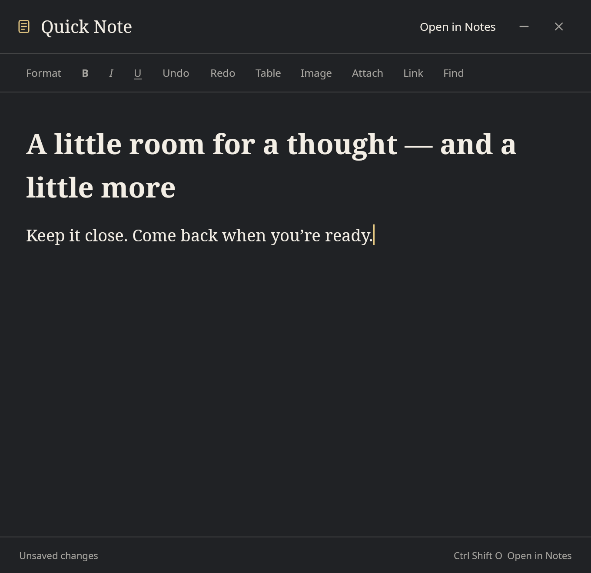

Notes that feel at home on Omarchy.
Local, offline notes in a native Rust app. Rich writing, checklists, basic tables, images, Quick Note and search, stored on your machine with no account required.
bash install.sh --no-quick-note
x86_64 Arch/Omarchy · Wayland/Hyprland. Qt is retired; legacy migration only.

Everything you reach for, nothing you don't.
Omarchy Notes does what you use Apple Notes for, the Linux way: keyboard-first, offline, and stored in files you own.
Write, it's saved
Autosave confirms "Saved" only once your words are really on disk. If saving ever fails, your text stays put with Retry and Export.
Checklists and tables
Nested checklists with round checkboxes, numbered and bulleted lists, and tables where Tab moves between cells.
Images and files
Paste images and attach files to notes. Existing merged tables and rich documents are preserved.
Folders and filing
Nested folders, pins, sorting and Recently Deleted. Tag/Smart Folder interfaces, gallery and library-wide attachment browsing remain deferred.
Find anything
Search all notes as you type with Ctrl Shift F, or find inside a note with Ctrl F.
Quick Note
A small capture window on a key of your choice, plus omarchy-notes-rust --capture "idea" from any terminal.
It wears whatever theme you do.
The initial appearance follows supported Omarchy theme settings. Settings remembers your palette, writing font, size and pane preferences.


No account. No cloud. No lock-in.
Your library is a folder in ~/.local/share/omarchy-notes-gpui: one SQLite database and your attachments.
- Works offline, always. Nothing leaves your machine.
- Crash-safe. Confirmed saves are committed to SQLite; deleted notes have 30-day retention in Recently Deleted.
- One-click backups. Verified complete copies, restored into a new library without replacing your current notebook.
- Leave any time. Export notes as Markdown, HTML or PDF, or your whole library as Markdown folders.
- Moving in. Import Markdown files or whole folders from Apple Notes exporters, Obsidian and more.
Up and running in a minute.
Download and inspect
Download the current installer on x86_64 Arch/Omarchy, as your normal user:
curl -fsSL https://raw.githubusercontent.com/last-refuge/omarchy-notes/main/install.sh -o install.sh less install.sh bash install.sh --dry-run bash install.sh --no-quick-note
Older published rust-v1.0.0 artifacts still have the old omarchy-notes-rust package name. The published rust-v1.0.1 release fixes this installer mismatch with newly named omarchy-notes packages; the older release has not been modified.
The current installer installs Omarchy Notes and needs no edition selector. Older edition-aware installers require --edition rust. Checksums and package identity are verified before pacman installation. Run it again to update; data is retained. The Arch package is now omarchy-notes. This is a package-only rename: binary omarchy-notes-rust, desktop ID org.omarchy.Notes.Rust, profile/runtime paths and rust-vVERSION tags are unchanged. New source archives are omarchy-notes-VERSION.tar.gz.
Open and capture
Search your launcher for Omarchy Notes. Use its Quick Note action, omarchy-notes-rust --quick-note, or Ctrl Shift N in the app. A global shortcut needs a manual unused compositor binding; automatic setup is not implemented.
Build from source
Install the pinned Rust toolchain and native dependencies from the Rust build guide. The Cargo package name is historical:
cargo run --release --locked -p omarchy-notes-preview --bin omarchy-notes-rust cargo test --workspace --locked
Scope and migration
Advanced table operations, drag filing, bulk organization and browsable revision history are deferred. X11 and other architectures are not advertised. Native/package and human usability checks still have gaps; see release notes.
Qt is retired, not a current install or support option. Migrate copies with verified backups; schema-3 quotation libraries require Rust. See migration and data and backups. Profile names remain unchanged; data and backups are unencrypted.